Modelling Dataset with two Factors.
Witold Wolski
29 March, 2021
Source:vignettes/Modelling2Factors.Rmd
Modelling2Factors.Rmd
library(prolfqua)
library(tidyverse)
conflicted::conflict_prefer("filter", "dplyr")Prepare p2691 dataset
datadir <- file.path(find.package("prolfquaData") , "quantdata")
inputMQfile <- file.path(datadir, "MAXQuant_ComboCourse_p2691_March_2018_WU183012.zip")
inputAnnotation <- file.path(datadir, "annotation_ComboCourse_p2691_March_2018_WU183012.xlsx")
startdata <- prolfqua::tidyMQ_ProteinGroups(inputMQfile)
annotation <- readxl::read_xlsx(inputAnnotation)
annotation$experiment = "p2691"
data <- inner_join(annotation, startdata, by = "raw.file")Add annotation information data to configuration and data.
atable <- AnalysisTableAnnotation$new()
atable$fileName = "raw.file"
atable$hierarchy[["protein_Id"]] <- c("majority.protein.ids")
atable$hierarchyDepth <- 1
atable$setWorkIntensity("mq.protein.intensity")
anaparam <- AnalysisParameters$new()
config <- AnalysisConfiguration$new(atable, anaparam)
config$table$factors[["condition_"]] = "condition"
config$table$factors[["batch_"]] = "experiment"
config$table$factors[["Run_ID"]] = "Run_ID"
config$table$factorDepth <- 1Preprocess and normalize Data.
adata <- setup_analysis(data, config)
adata <- prolfqua::remove_small_intensities(adata,config)
p2691 <- LFQData$new(adata, config)
p2691$get_Plotter()$intensity_distribution_density()
Prepare p2370 dataset
datadir <- file.path(find.package("prolfquaData") , "quantdata")
inputMQfile <- file.path(datadir, "MAXQuant_ComboCourse_p2370_March_2017_WU183008.zip")
inputAnnotation <- file.path(datadir, "annotation_ComboCourse_p2370_March_2017_WU183008.xlsx")
startdata <- prolfqua::tidyMQ_ProteinGroups(inputMQfile)
annotation <- readxl::read_xlsx(inputAnnotation)
annotation$experiment <- "p2370"
data <- inner_join(annotation, startdata , by = "raw.file")Code snipped below shows how to add annotation to the data and configuration.
atable <- AnalysisTableAnnotation$new()
atable$fileName = "raw.file"
atable$hierarchy[["protein_Id"]] <- c("majority.protein.ids")
atable$hierarchyDepth <- 1
atable$setWorkIntensity("mq.protein.intensity")
anaparam <- AnalysisParameters$new()
config <- AnalysisConfiguration$new(atable, anaparam)
config$table$factors[["condition_"]] = "condition"
config$table$factors[["batch_"]] = "experiment"
config$table$factors[["Run_ID"]] = "Run_ID"
config$table$factorDepth <- 1
adata <- setup_analysis(data, config)
adata <- prolfqua::remove_small_intensities(adata,config)
p2370 <- LFQData$new(adata, config)
p2370$get_Plotter()$intensity_distribution_density()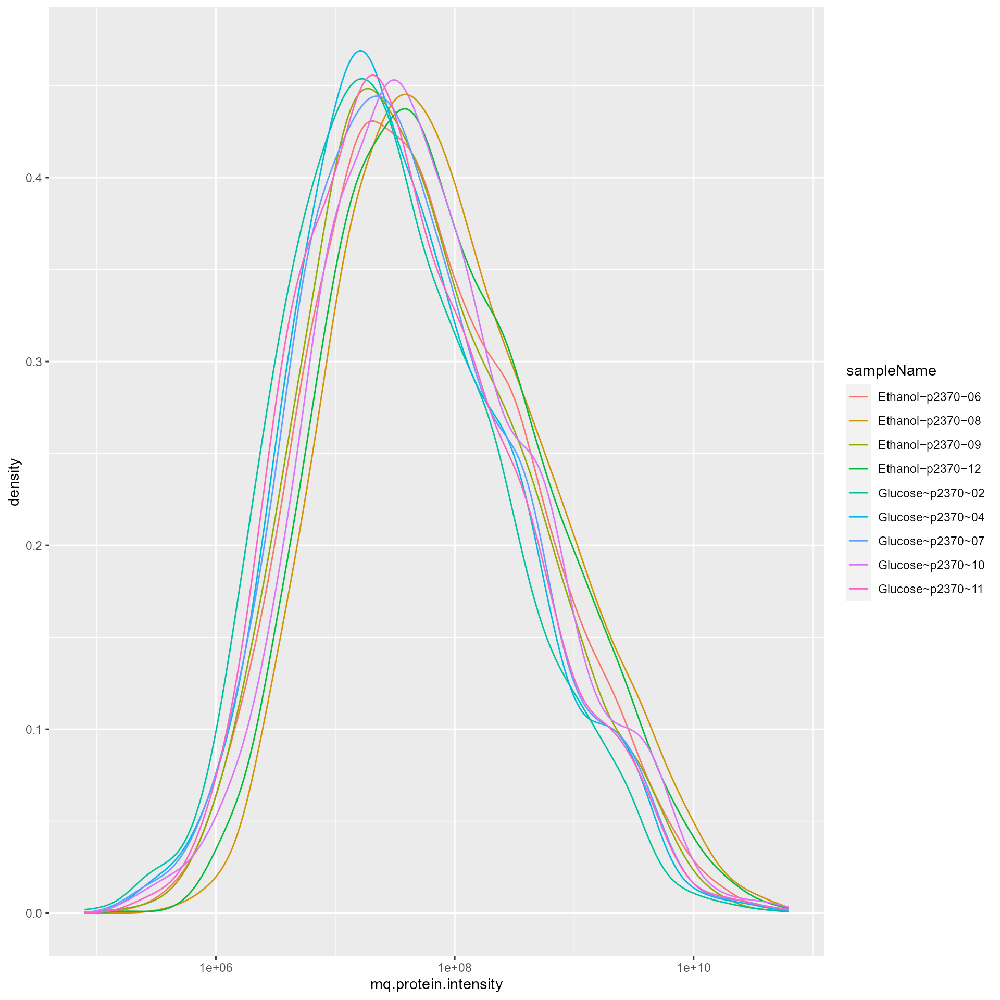
Merge both dataset
To simulate a factorial design we merge both datasets.
outpath <- "results_modelling"
data <- bind_rows(p2691$data, p2370$data)
config <- p2691$config$clone(deep = TRUE)
config$table$factorDepth <- 2QC for merged dataset
pMerged <- LFQData$new(data, config)
bb <- pMerged$complete_cases()
tr <- pMerged$get_Transformer()
pMerged <- tr$log2_robscale()
pl <- pMerged$get_Plotter()
pl$intensity_distribution_density()
Correlation among samples.
pl$sample_correlation()
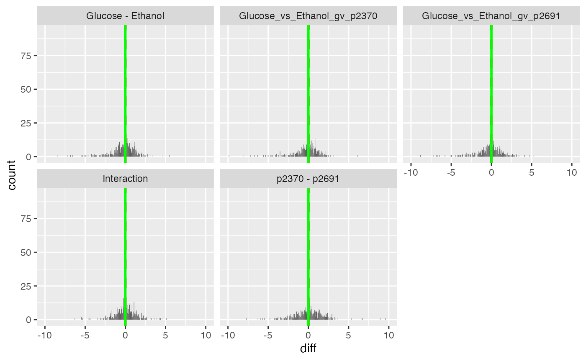
sample correlations
ph <- pl$heatmap_cor()
pha <- pl$NA_heatmap()
print(ph)
sample correlation heatmap merged
print(pha)
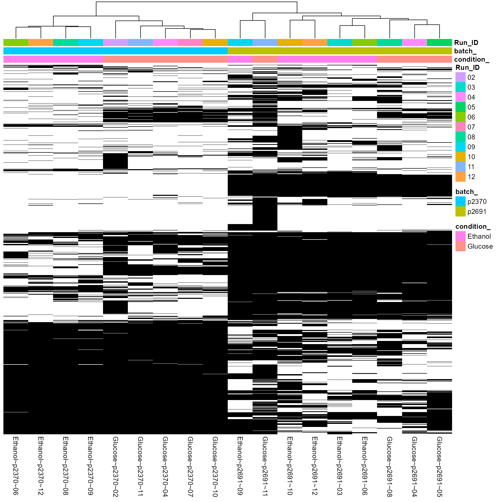
Missing data heatmap for merged data
su <- pMerged$get_Summariser()
su$hierarchy_counts()## # A tibble: 1 x 2
## isotopeLabel protein_Id
## <chr> <int>
## 1 light 3339
su$hierarchy_counts_sample("plot")
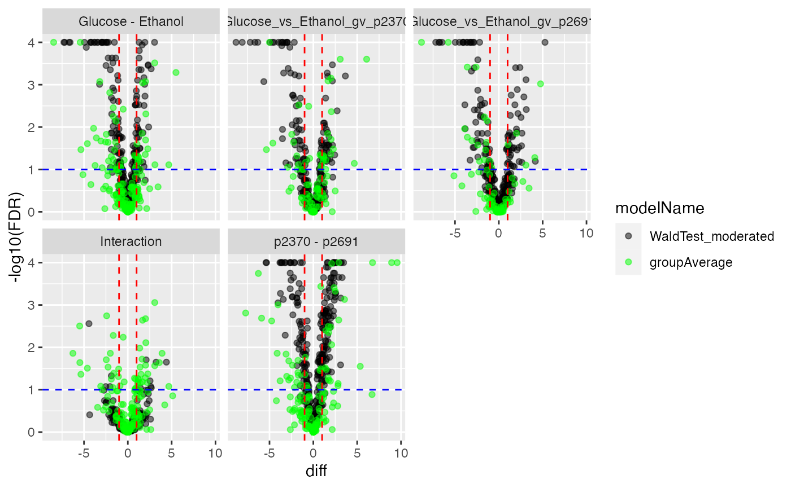
Number of Proteins or peptides per sample in merged dataset
pl <- pMerged$get_Plotter()
pl$heatmap()
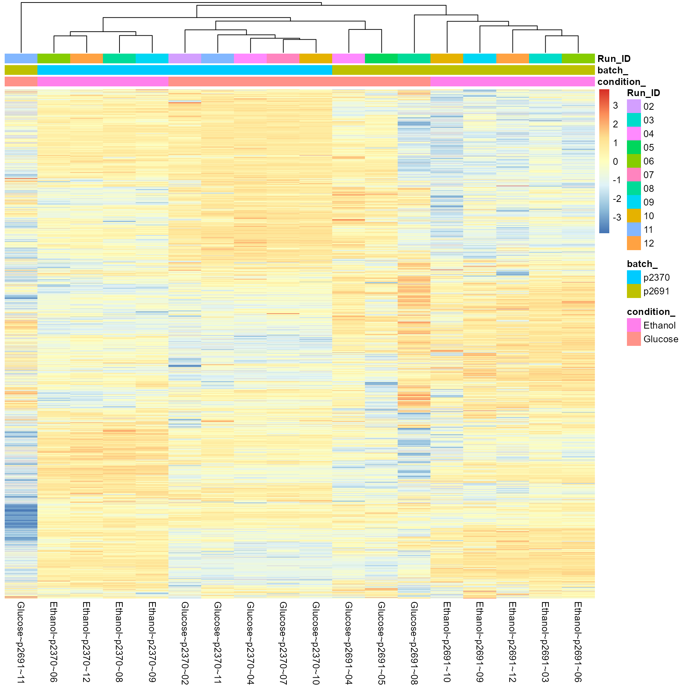
Protein level boxplots
bp <- pl$boxplots()
ggpubr::ggarrange(plotlist = bp$boxplot[1001:1006])
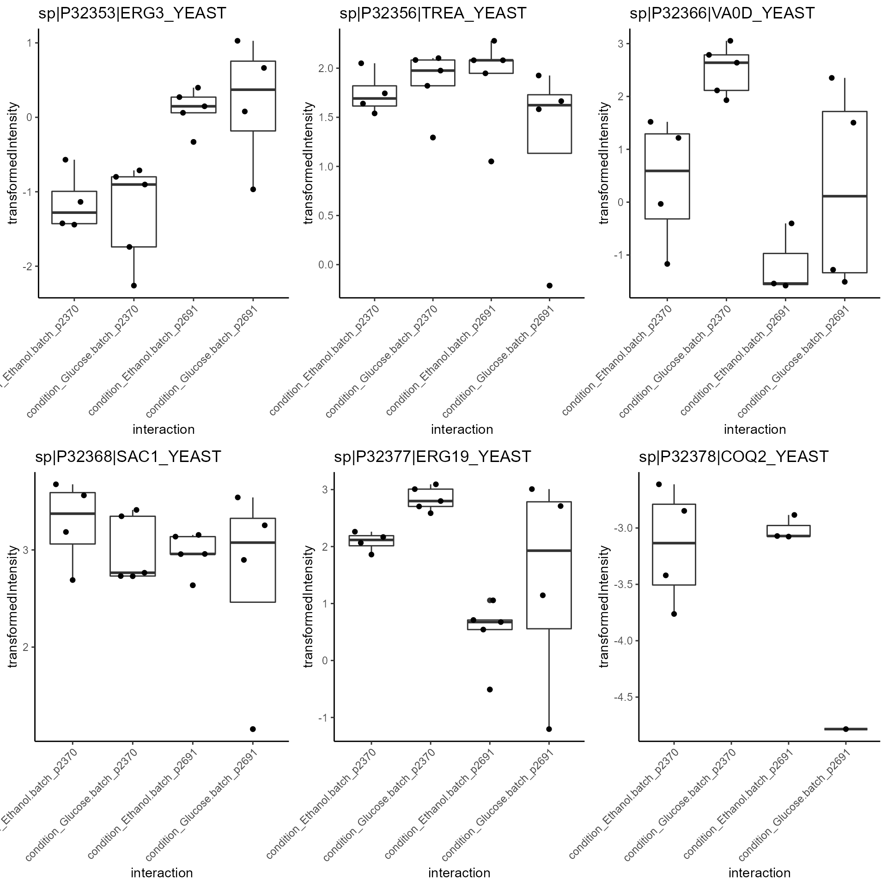
Protein level boxplots
Model Fitting
pMerged$config$table$getWorkIntensity()## [1] "transformedIntensity"
formula_Batches <-
strategy_lm("transformedIntensity ~ condition_ * batch_ ")
# specify model definition
modelName <- "Model"
DEBUG <- TRUE
Contrasts <- c("Glucose - Ethanol" = "condition_Glucose - condition_Ethanol",
"p2370 - p2691" = "batch_p2370 - batch_p2691",
"Glucose_vs_Ethanol_gv_p2370" = "`condition_Glucose:batch_p2370` - `condition_Ethanol:batch_p2370`",
"Glucose_vs_Ethanol_gv_p2691" = "`condition_Glucose:batch_p2691` - `condition_Ethanol:batch_p2691`",
"Interaction" = "`Glucose_vs_Ethanol_gv_p2370` - `Glucose_vs_Ethanol_gv_p2691`"
)
mod <- prolfqua::build_model(
pMerged$data,
formula_Batches,
subject_Id = pMerged$config$table$hierarchyKeys() )
mod$anova_histogram()## $plot
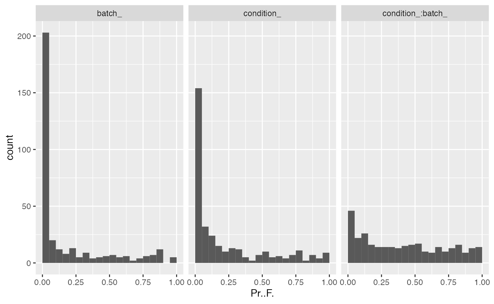
p-value distributions for ANOVA analysis.
##
## $name
## [1] "Anova_p.values_.pdf"Examine proteins with a significant interaction between the two factors treatment and batch.
ANOVA <- mod$get_anova()
unique(ANOVA$factor)## [1] "condition_" "batch_" "condition_:batch_"## # A tibble: 5 x 10
## protein_Id isSingular nrcoef factor Df Sum.Sq Mean.Sq F.value Pr..F.
## <chr> <lgl> <int> <chr> <int> <dbl> <dbl> <dbl> <dbl>
## 1 sp|P00331|AD~ FALSE 4 conditi~ 1 50.1 50.1 172. 2.96e-9
## 2 sp|P32583|SR~ FALSE 4 conditi~ 1 2.78 2.78 193. 7.33e-8
## 3 sp|Q12487|RM~ FALSE 4 conditi~ 1 9.91 9.91 121. 5.82e-8
## 4 sp|P00330|AD~ FALSE 4 conditi~ 1 2.38 2.38 46.6 8.20e-6
## 5 sp|P36095|VP~ FALSE 4 conditi~ 1 11.0 11.0 79.0 9.46e-6
## # ... with 1 more variable: FDR.Pr..F. <dbl>
protIntSig <- ANOVA %>% filter(factor == "condition_:batch_") %>% filter(FDR.Pr..F. < 0.05)
protInt <- pMerged$get_copy()
protInt$data <- protInt$data[protInt$data$protein_Id %in% protIntSig$protein_Id,]
ggpubr::ggarrange(plotlist = protInt$get_Plotter()$boxplots()$boxplot)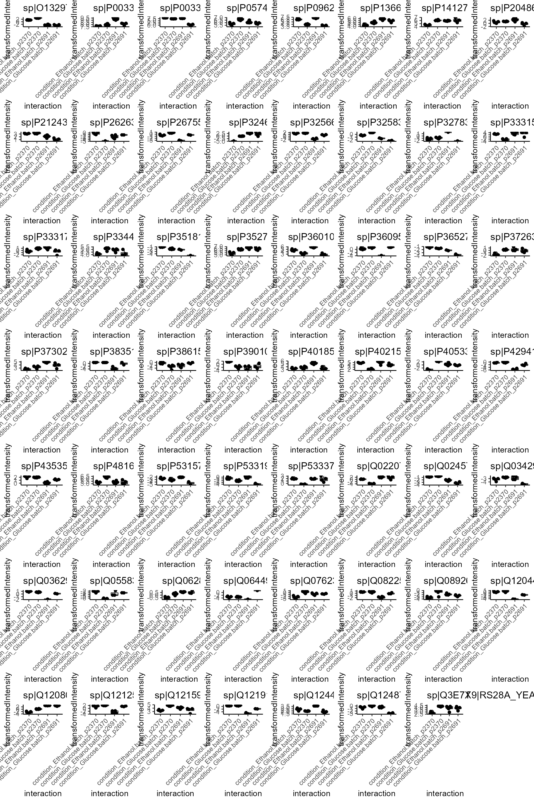
Compute contrasts
contr <- ContrastsModerated$new(mod, Contrasts)
contr$get_contrasts_sides()## # A tibble: 5 x 3
## contrast c1 c2
## <chr> <chr> <chr>
## 1 Glucose - Ethanol condition_Glucose condition_Ethanol
## 2 p2370 - p2691 batch_p2370 batch_p2691
## 3 Glucose_vs_Ethanol_gv_p2~ condition_Glucose:batch_p~ condition_Ethanol:batch_~
## 4 Glucose_vs_Ethanol_gv_p2~ condition_Glucose:batch_p~ condition_Ethanol:batch_~
## 5 Interaction Glucose_vs_Ethanol_gv_p23~ Glucose_vs_Ethanol_gv_p2~
contrdf <- contr$get_contrasts()
plotter <- contr$get_Plotter()
plotter$volcano()## $FDR.moderated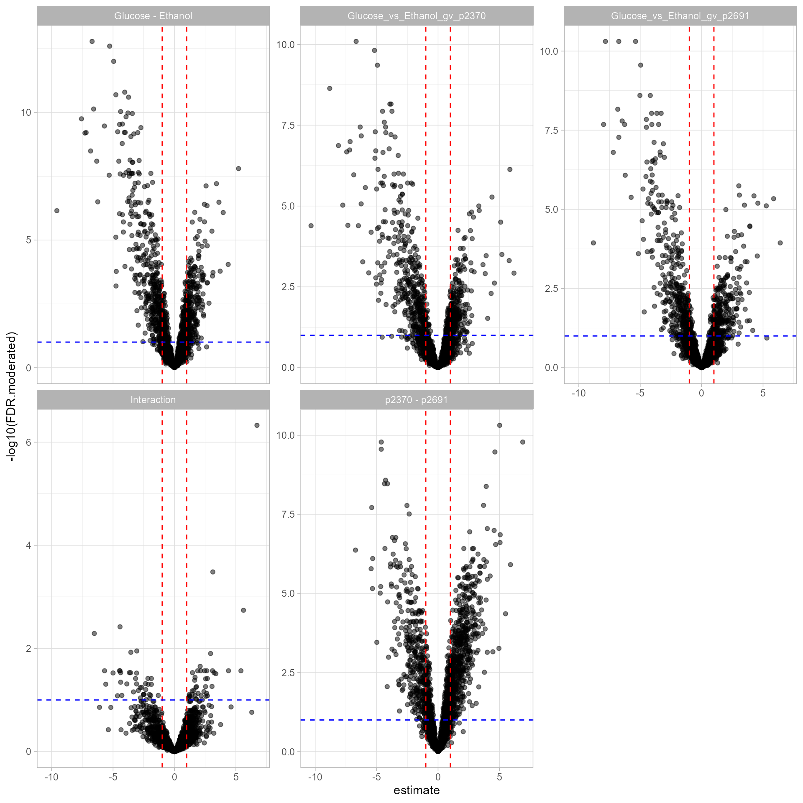
plotter$ma_plot()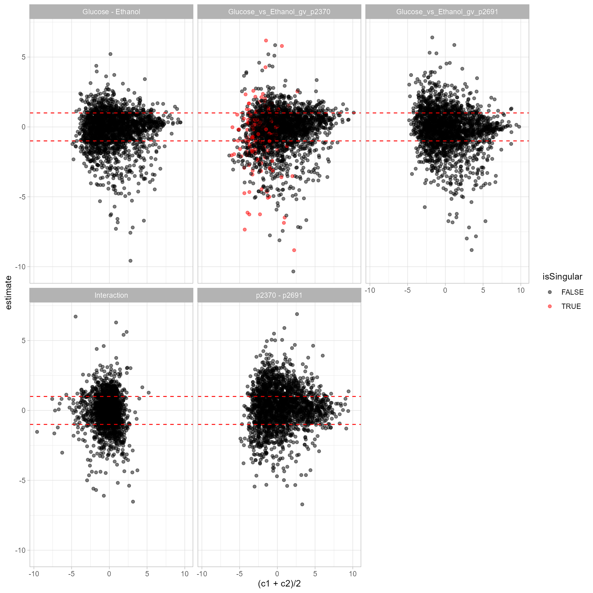
sigInteraction <- contrdf %>%
filter(contrast == "Interaction" & FDR.moderated < 0.1)
protInt <- pMerged$get_copy()
protInt$data <- protInt$data[protInt$data$protein_Id %in% sigInteraction$protein_Id,]
hm <- protInt$get_Plotter()$heatmap()
hm
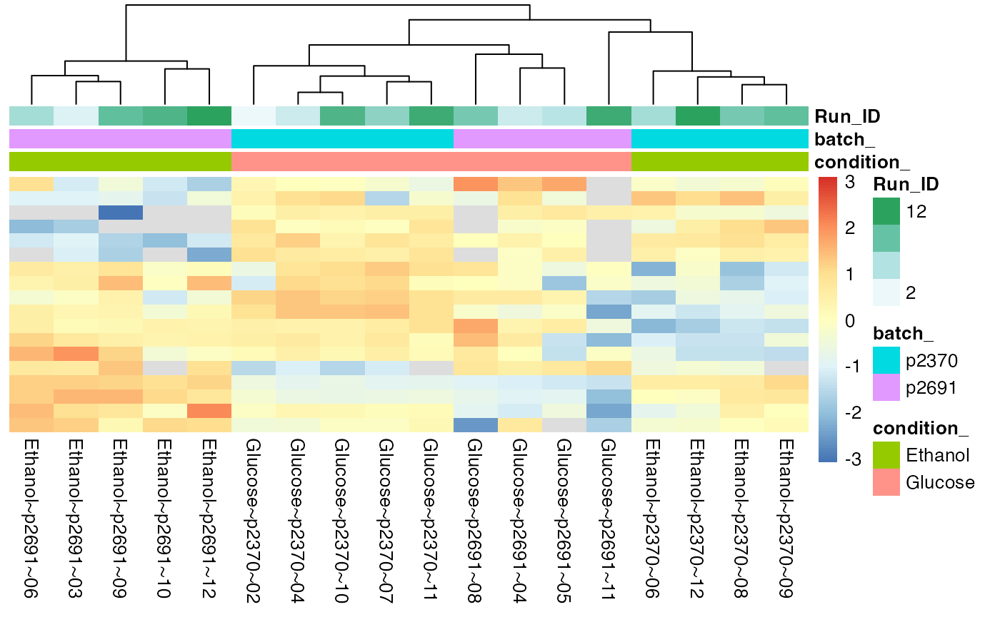
Proteins with significant Interactions
Annalyse contrasts with missing data imputation
contrSimple <- ContrastsSimpleImpute$new(pMerged, Contrasts)
contrdfSimple <- contrSimple$get_contrasts()
pl <- contrSimple$get_Plotter()
pl$histogram_estimate()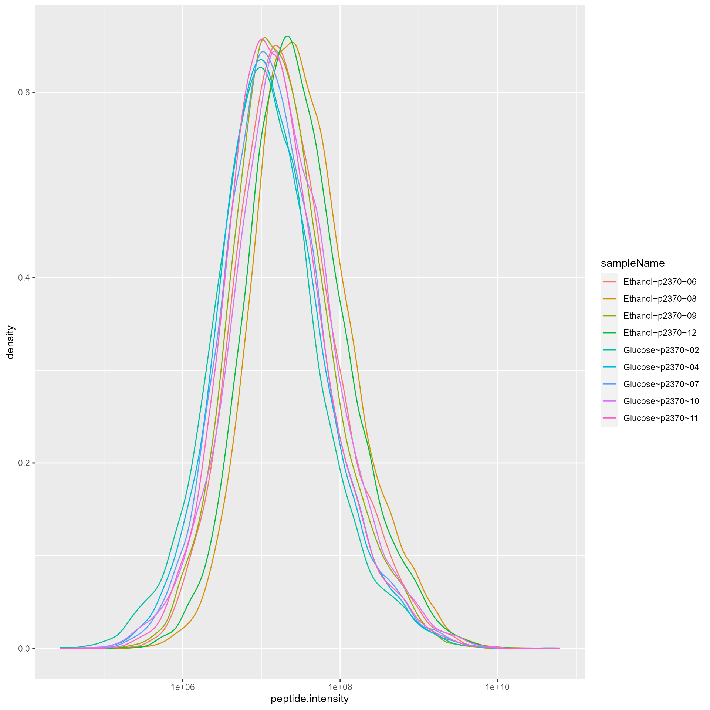